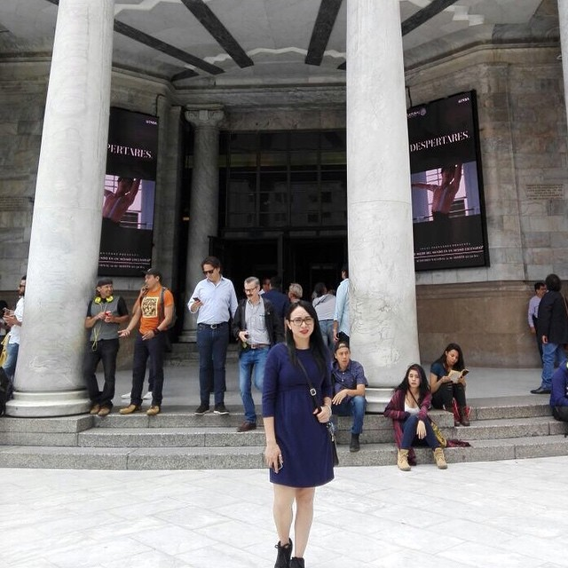

Biografía de Arely Salazar
Historia
Nací el 6 de abril del 1991, en la ciudad de Cancún Quintana Roo. Primera hija de la familia salazar Chan. El total de miembros en la familia es de 5 personas, todos de origen cancunense a excepción de mis padres, ya que mi madre nació en Valladolid Yucatán y mi padre de Ticul Yucatán.
Los primeros años de vida fueron en la bello estado de Quintana Roo, sin embargo mi padre se metió a trabajar en la milicia y fue enviado un año en la Atlixco, Puebla y 9 años en la ciudad Torreón, Coahuila. Mi padre causó baja en la milicia y regresamos a vivir en nuestra ciudad de origen.
Trayectoria Académica
Estudié en la preparatoria "Colegio de Bachilleres Plante Cancún II" en la ciudad de Cancún.
Los estudios superiores los realicé en la "Universidad del Caribe" en la licenciatura de "innovación empresarial", generación 2009-2013.
posteriormente, ingresé a la universidad "La Salle" para estudiar la maestría en Ing. Económico-Financiero en 2014, sin embargo, ante la necesidad de bases matemáticas en nivel ingería pura, decidí y preferí estudiar una carrera completa en algún área de mi interés, así, dejé el posgrado e ingresé en 2017 a la carrera "Ingeniería en Datos e Inteligencia Organizacional nuevamente en mi alma máter la "Universidad del Caribe" para ligar la licenciatura anterior con el poder de la tecnología.
Cambiar de dirección y conjuntar el arte de las matemáticas y las ciencias humanas en mi camino ha sido una de las mejores deciciones que he tomado, la ingeniería que actualmente estoy estudiando me ha encantado la dificultad que representa y lo vital que resultan tales conocimientos en esta era digital.
Pasatiempos
Me gusta leer por temporadas literatura diversa: académico, novelas, poesía, ficción, etc.
Además de leer, me gusta patinar, salir de viaje a "pueblear" en los alrededores de mi ciudad y por supuesto, cuando hay oportunidades vacacionales, escaparme a conocer otras ciudades.
De igual forma, me gusta hacer ejercicio como salir a correr o caminar y como deporte me encanta ponerme a prueba en natación, tenis y voleibol.
Trabajo de elaboración de página web
Materia: Programación Web
Alumno: Arely Salazar | 170100010